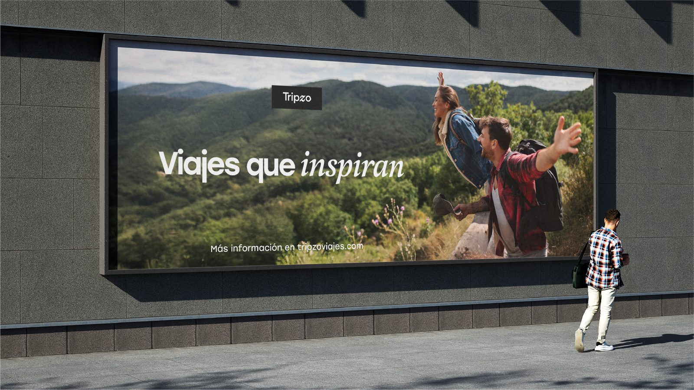
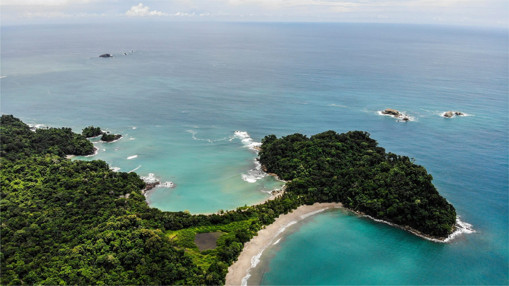
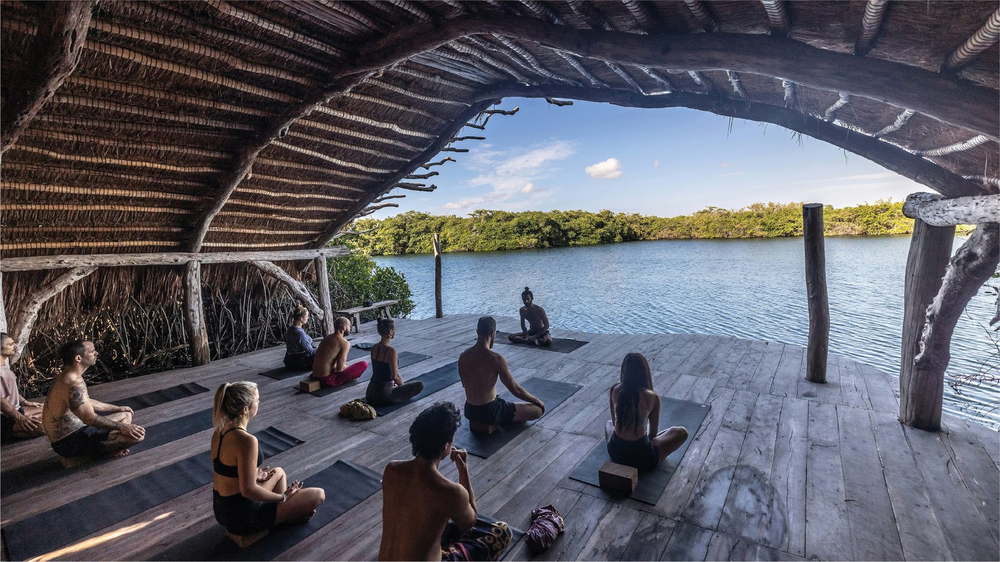
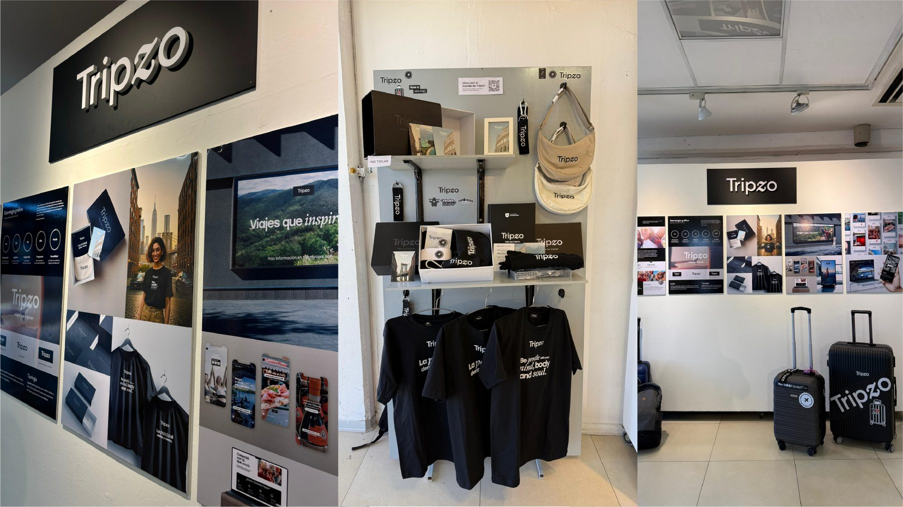
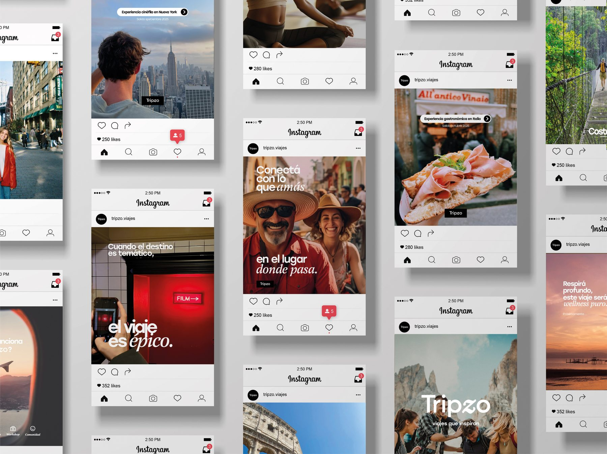
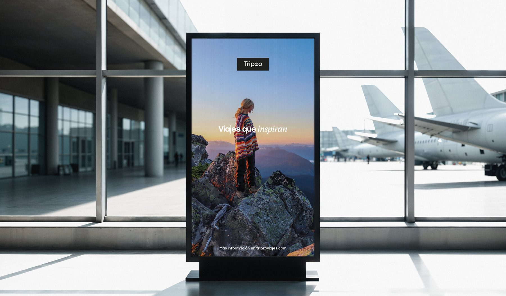
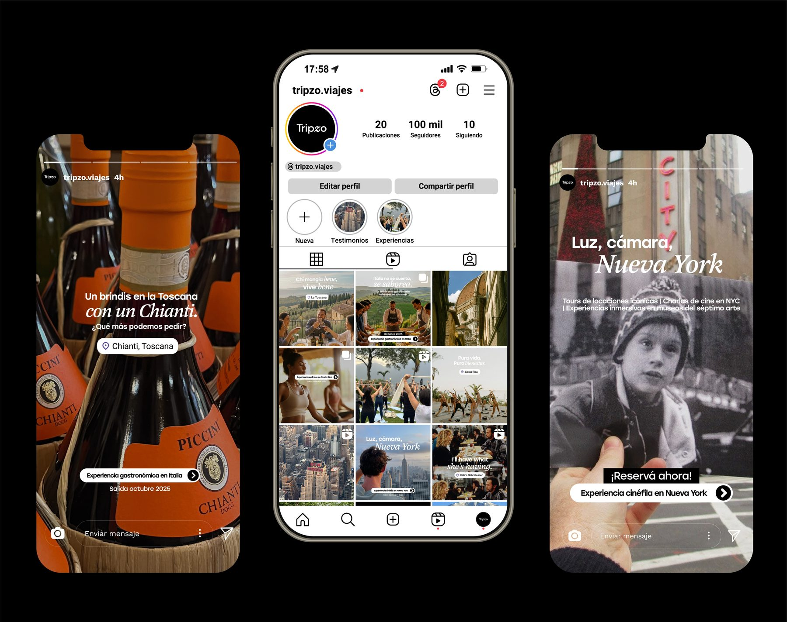
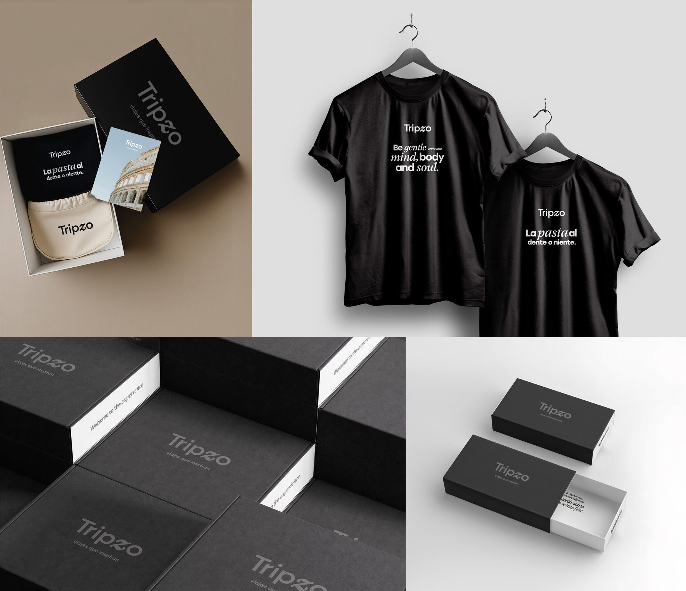
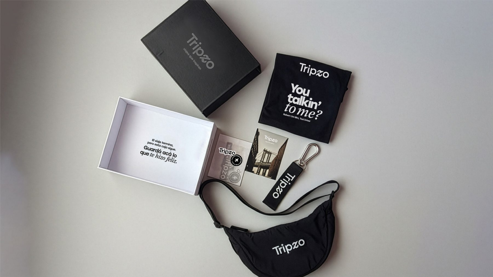

Tripzo
Tesis de diseño: una agencia de viajes boutique que propone experiencias temáticas curadas, donde el destino es escenario, la temática es relato y la comunidad es pertenencia.

El proyecto
Tripzo es una agencia de viajes online que diseña experiencias temáticas curadas para una nueva generación de viajeros que busca sentido, estética y comunidad.
Con operación digital en Argentina y destinos nacionales e internacionales, esta agencia propone un modelo boutique liderado por hosts especializados, donde cada viaje se transforma en un universo narrativo: el destino como escenario, la temática como relato y la comunidad como pertenencia.
Ejes conceptuales
Cuatro pilares que sostienen la propuesta de marca — no un proceso secuencial, sino un sistema de sentido que se sostiene en conjunto.
Temática
Cada viaje se organiza en torno a una temática que actúa como hilo narrativo, dándole sentido y coherencia a la experiencia completa del viajero.

Destino
El destino deja de ser un punto geográfico para convertirse en el escenario donde la temática cobra forma y se vive en primera persona.

Workshop
Los workshops proponen una instancia de aprendizaje activo, donde el viajero se apropia de saberes y prácticas ligadas a la temática del viaje.
Comunidad
Más allá del viaje puntual, la comunidad sostiene el vínculo entre viajeros afines y genera un sentido de pertenencia que perdura en el tiempo.
Detrás de escena

El proyecto fue desarrollado en el marco de una tesis de diseño, donde la identidad de Tripzo se trasladó a un espacio expositivo físico para materializar el universo visual de la marca.
Las piezas, aplicaciones y objetos exhibidos fueron producidos a partir de los mockups desarrollados previamente para el sistema gráfico, buscando mantener coherencia entre la propuesta conceptual y su representación tangible. La ambientación del stand, incluyendo cartel corpóreo, láminas, merchandising y elementos de viaje, fue pensada como una extensión de la experiencia de marca.
Herramientas
Galería
Piezas del sistema de marca: logo, paleta, tipografía y aplicaciones.





¿Te gustaría algo así para tu marca? Hablemos ↗